Nature Seed Chora njia. Wakutanishe.
Chemshabongo ya fizikia bila malipo ambayo unaweza kuicheza kwenye kivinjari chako, ukitatua kwa kuchora mstari. Chora mstari kwa wino mdogo nao utakuwa mteremko, daraja au kinasa kinachombeba Water Drop hadi Seed. Kila ngazi inayotatuliwa hurejesha taswira ya msitu wa rangi za maji.
Ilitolewa tarehe 18 Septemba 2026 ikiwa na ngazi 100, nyota za ufanisi wa mistari na maendeleo yaliyohifadhiwa. Inapatikana bila malipo kwenye itch.io, Game Jolt na indiexpo; toleo la iOS na Android ndilo lengo na bado halipo kwenye maduka ya programu.
Chorachora kwa wino mdogo
Unganishaleta Water Drop kwa Seed
Kuchanuarudisha msitu
Ndani ya toleo la sasa
Unachochora kinakuwa sehemu ya ngazi.
Kila mchoro unaoutumia unakuwa kitu imara chenye migongano halisi, na Water Drop na Seed huitikia. Wino na idadi ya mistari vyote ni vichache, hivyo umbo la mstari ni muhimu.
Hali ya kutolewa Ilizinduliwa tarehe 18 Septemba 2026

Muhtasari wa mchezo
Chemshabongo tulivu ya kuchora kuhusu kuwakutanisha wahusika wawili wadogo.
Wazo
Chora njia, wakutanishe Water Drop na Seed na utazame mchoro huo tulivu ukirudi kwenye uhai.
Zindua toleo
Ngazi 100 zinazochezeka kwa kuchora kwa mguso, nyota kwa ufanisi wa mistari na maendeleo yanayohifadhiwa kati ya vipindi.
Hadhira
Wachezaji wanaopenda chemshabongo tulivu, fizikia nyepesi, mandhari ya asili na vipindi vya simu visivyo na msongo.
Hali
Ilitolewa tarehe 18 Septemba 2026 na inachezwa bila malipo kwenye kivinjari chako. Toleo la simu ndilo lengo; bado halipo kwenye maduka ya programu.
Vipengele
Unachofanya katika Nature Seed.
Njia halisi zinazochorwa kutatua chemshabongo
Kila chemshabongo huanza na mandhari ya ardhi, Seed na Water Drop. Mchoro wa mchezaji unakuwa mteremko, daraja au kinasa kinachowaunganisha.
Mrejesho wazi wa fizikia
Water Drop na Seed husogea kwa njia unazoweza kuzifuata, hivyo jaribio lililoshindwa hukuonyesha cha kubadilisha.
Zawadi za kurejesha msitu
Maliza ngazi moja na taswira ya mchoro hujaa rangi na miti inayokua.
Ngazi fupi, kuchora kwa mguso
Ngazi ni fupi na unachora kwa mguso, jambo linalofaa vipindi vya haraka kwenye simu.
Kitanzi cha uchezaji
Jinsi ya kucheza Nature Seed
- Hatua ya 01Soma mchoro
Tafuta miteremko, mapengo na vizuizi, na njia salama zaidi ya kuwaunganisha wahusika wote wawili.
- Hatua ya 02Chora mstari
Chora mstari wako. Mchoro huo unakuwa mteremko, mwongozo au kinasa cha wahusika.
- Hatua ya 03Jitolee na uzingatie
Thibitisha mstari na utazame wahusika wakijibu. Unaweza kuona kilichofanya kazi na kisichofanya kazi.
- Hatua ya 04Bloom au chuja
Water Drop akimfikia Seed, msitu unarudi. Wakikosana, chora upya kwa ulichojifunza hivi punde.
Hadithi / ulimwengu
Msitu uliochorwa kwa mchoro unasubiri maji.
Nature Seed ilianza kama chemshabongo ya fizikia ya kuchora mstari kuhusu kurejesha kitu dhaifu, si kusukuma vitu ili vikutane.
Wahusika ni Seed, Water Drop na msitu unaorudi kutoka mchoro hadi rangi unapocheza. Kila chemshabongo ni kazi ndogo: chunguza ardhi, chora njia na usaidie maji kufikia kitu kinachoweza kukua.
- Mwelekeo wa muundo
- Fizikia tulivu na urejeshaji unaoonekana
- Wahusika
- Water Drop na Seed
- Mwingiliano
- Kuchora kwa mguso
- Zawadi ya Umahiri
- Suluhisho la mstari mmoja hupata nyota tatu
Kwa muhtasari
Bila malipo kwenye kivinjari leo, huku simu ikiwa lengo.
Unapewa wino mdogo na idadi ndogo ya mistari. Zitumie kumbeba Water Drop hadi Seed, kisha rudia ngazi na upunguze suluhisho lako hadi mstari mmoja kupata nyota tatu.
- Aina
- Chemshabongo ya fizikia ya kuchora mstari
- Lengo la jukwaa
- iOS / Android
- Umbo la kipindi
- Ngazi fupi za utulivu
Pakua vipengee
Vipengee vya vyombo vya habari na watayarishi vya Nature Seed
Maonyesho ya awali ya WebP kwa utangazaji wa vyombo vya habari, mapitio ya wachapishaji na marejeo ya ukurasa wa duka. Faili chanzo zenye ubora kamili zinapatikana kwa ombi.
Chapa na wahusika
 Water DropMhusika wa buluu anayepaswa kumfikia Seed.
Water DropMhusika wa buluu anayepaswa kumfikia Seed.
 Mhusika SeedMhusika wa kijani ambaye Water Drop anajaribu kumfikia.
Mhusika SeedMhusika wa kijani ambaye Water Drop anajaribu kumfikia.
 Ukuaji wa mitiMti unaokua baada ya kutatua.
Ukuaji wa mitiMti unaokua baada ya kutatua.
 Menyu ya msituMandharinyuma ya menyu kuu.
Menyu ya msituMandharinyuma ya menyu kuu.
 Mandharinyuma ya uchezajiMandharinyuma ya ngazi yenye eneo tupu la kuchezea.
Mandharinyuma ya uchezajiMandharinyuma ya ngazi yenye eneo tupu la kuchezea.
Ngazi za mchoro za kuchora mstari
 Ngazi ya mchoro 01Mchoro kabla ya kutatua.
Ngazi ya mchoro 01Mchoro kabla ya kutatua.


Ngazi ya mchoro 02Mchoro kabla ya kutatua. Ngazi ya mchoro 03Mchoro kabla ya kutatua.
Ngazi ya mchoro 03Mchoro kabla ya kutatua.
 Ngazi ya mchoro 04Mchoro kabla ya kutatua.
Ngazi ya mchoro 04Mchoro kabla ya kutatua.
 Ngazi ya mchoro 05Mchoro kabla ya kutatua.
Ngazi ya mchoro 05Mchoro kabla ya kutatua.
 Ngazi ya mchoro 06Mchoro kabla ya kutatua.
Ngazi ya mchoro 06Mchoro kabla ya kutatua.
 Ngazi ya mchoro 07Mchoro kabla ya kutatua.
Ngazi ya mchoro 07Mchoro kabla ya kutatua.
 Ngazi ya mchoro 08Mchoro kabla ya kutatua.
Ngazi ya mchoro 08Mchoro kabla ya kutatua.
 Ngazi ya mchoro 09Mchoro kabla ya kutatua.
Ngazi ya mchoro 09Mchoro kabla ya kutatua.
 Ngazi ya mchoro 10Mchoro kabla ya kutatua.
Ngazi ya mchoro 10Mchoro kabla ya kutatua.
Matukio ya chemshabongo yaliyorejeshwa
 Ngazi ya 01 iliyorejeshwaImerejeshwa baada ya kutatuliwa.
Ngazi ya 01 iliyorejeshwaImerejeshwa baada ya kutatuliwa.
 Ngazi ya 02 iliyorejeshwaImerejeshwa baada ya kutatuliwa.
Ngazi ya 02 iliyorejeshwaImerejeshwa baada ya kutatuliwa.
 Ngazi ya 03 iliyorejeshwaImerejeshwa baada ya kutatuliwa.
Ngazi ya 03 iliyorejeshwaImerejeshwa baada ya kutatuliwa.
 Ngazi ya 04 iliyorejeshwaImerejeshwa baada ya kutatuliwa.
Ngazi ya 04 iliyorejeshwaImerejeshwa baada ya kutatuliwa.
 Ngazi ya 05 iliyorejeshwaImerejeshwa baada ya kutatuliwa.
Ngazi ya 05 iliyorejeshwaImerejeshwa baada ya kutatuliwa.
 Ngazi ya 06 iliyorejeshwaImerejeshwa baada ya kutatuliwa.
Ngazi ya 06 iliyorejeshwaImerejeshwa baada ya kutatuliwa.
 Ngazi ya 07 iliyorejeshwaImerejeshwa baada ya kutatuliwa.
Ngazi ya 07 iliyorejeshwaImerejeshwa baada ya kutatuliwa.
 Ngazi ya 08 iliyorejeshwaImerejeshwa baada ya kutatuliwa.
Ngazi ya 08 iliyorejeshwaImerejeshwa baada ya kutatuliwa.
 Ngazi ya 09 iliyorejeshwaImerejeshwa baada ya kutatuliwa.
Ngazi ya 09 iliyorejeshwaImerejeshwa baada ya kutatuliwa.
 Ngazi ya 10 iliyorejeshwaImerejeshwa baada ya kutatuliwa.
Ngazi ya 10 iliyorejeshwaImerejeshwa baada ya kutatuliwa.
Ratiba ya maendeleo
Ratiba ya maendeleo ya Nature Seed
- Majira ya joto 2025Dhana asilia
Nature Seed ilianza kama wazo la chemshabongo tulivu ya simu kuhusu uhusiano na kurejesha asili.
- Oktoba 2025Utambulisho wa Seed na Water Drop
Tulikamilisha hati ya muundo na kuamua Seed na Water Drop kuwa wahusika wakuu.
- Desemba 2025Maendeleo yanaanza
Tulipanga ngazi za kwanza kwenye karatasi, kisha tukaanza kujenga, na mifumo ya msingi ikaanza kuchezeka.
- Februari 2026Awamu kubwa ya ngazi za rasimu
Rasimu kubwa ya awali ya ngazi zote ilitupatia msingi wa kuziboresha na kuzisawazisha baadaye.
- Machi-Aprili 2026Mitambo na ukaguzi wa ngazi
Tulikagua mbinu za ziada na ngazi za rasimu, kisha tukazirahisisha au kuziunda upya ili mchezo ubaki tulivu.
- Julai 2026Awamu ya mfano wa wima
Toleo la Julai liliweka kuchora kwa wino mdogo, nyota za ufanisi, maendeleo yaliyohifadhiwa na uzalishaji thabiti wa mistari katika kitanzi kimoja kinachoweza kuchezwa.
- 18 Septemba 2026Kutolewa kwa Nature Seed
Mchezo ulitolewa kama Nature Seed ukiwa na ngazi 100, nyota za ufanisi wa mistari, maendeleo yaliyohifadhiwa na matukio ya urejeshaji wa rangi za maji.
Maswali Yanayoulizwa Mara kwa Mara ya Nature Seed
Maswali ya kawaida kuhusu Nature Seed
Je, Nature Seed inachezwa bila malipo?
Ndiyo. Unaweza kuicheza bila malipo kwenye kivinjari chako kwenye itch.io, Game Jolt na indiexpo.
Je, Nature Seed imetoka tayari?
Ndiyo. Ilitolewa tarehe 18 Septemba 2026 ikiwa na ngazi 100. Toleo la iOS na Android ndilo jukwaa lengwa na bado halipo kwenye maduka ya programu.
Nature Seed ni mchezo wa aina gani?
Chemshabongo ya fizikia ya kuchora mstari ya kutuliza. Mistari unayochora inakuwa vitu imara vinavyowasaidia Water Drop na Seed kukutana.
Unachezaje Nature Seed?
Soma mandhari ya ardhi, chora njia kwa wino mdogo, kisha utazame wahusika wote wawili wakijibu. Wakikosana, chora upya. Mistari michache zaidi hupata nyota nyingi zaidi, na mstari mmoja hupata tatu.
Nani anatengeneza Nature Seed?
WillowinWorlds, studio huru inayotengeneza michezo ya chemshabongo na arcade kwa simu.
Je, naweza kutumia vipengee vya vyombo vya habari vya Nature Seed?
Ndiyo, kwa vyombo vya habari, mapitio ya wachapishaji na marejeo ya duka. Faili chanzo hubaki za faragha isipokuwa uziombe kwetu.
Nature Seed Devlog
Nini kilibadilika na lini
- Kutolewa kwa Nature Seed
Nature Seed ilizinduliwa kwa jina lake la mwisho kama mchezo wa kivinjari bila malipo kwenye itch.io, Game Jolt na indiexpo, ikiwa na ngazi 100, nyota za ufanisi wa mistari na maendeleo yaliyohifadhiwa.
- Marejesho ya Kiwango cha 2 na pasi ya uthabiti
Kiwango cha 2 sasa kinatumia jozi ya usuli wa uzalishaji, pamoja na usanidi wa kiwango unaotegemewa zaidi, ukaguzi wa mgongano na maoni ya kukamilisha.
- Julai 2026Toleo linaloweza kuchezwa
Toleo la Julai liliunganisha kuchora mistari kwa wino mdogo, nyota za ufanisi, maendeleo yaliyohifadhiwa na mrejesho wa urejeshaji.
- Aprili 2026Awamu ya kurekebisha ngazi
Baada ya ukaguzi wa ndani, tuliunda upya ngazi kadhaa za rasimu ili kupunguza utata na kuzifanya zisomeke kwa urahisi kwenye simu.
- Machi 2026Ukaguzi wa mitambo
Tulijaribu mbinu za ziada na kuondoa zile zilizofanya ngazi kuhisi zimejaa.
- Februari 2026Awamu kubwa ya ngazi za rasimu
Rasimu kubwa ya awali ya ngazi zote ikawa msingi wa kuziboresha na kuzisawazisha baadaye.
- Desemba 2025Maendeleo yanaanza
Mifumo ya msingi ilihamishwa kutoka kwenye hati ya muundo hadi umbo linaloweza kuchezwa.
- Majira ya joto 2025Dhana asilia
Toleo la kwanza la Nature Seed lilikuwa wazo la chemshabongo tulivu kuhusu uhusiano na kurejesha asili.